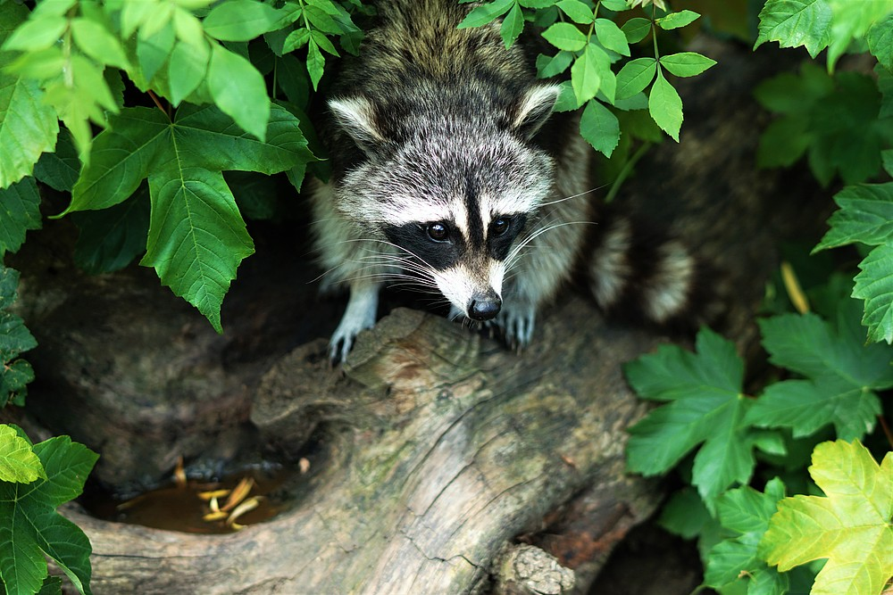

Nuestros Servicios
Realizamos un diagnóstico detallado de la zona afectada, identificando las especies invasoras presentes y evaluando su impacto en el ecosistema. Aplicamos técnicas de erradicación efectivas y seguras, incluyendo métodos mecánicos, biológicos y químicos controlados. Nuestro equipo especializado garantiza la ejecución del proceso de manera eficiente y sin riesgos para otras especies nativas. Además, ofrecemos un seguimiento posterior para evitar la reaparición de especies invasoras, asegurando la restauración del equilibrio natural.
Aprovechamos los recursos obtenidos de la erradicación para transformarlos en materias primas útiles y sostenibles. Procesamos pieles y cueros para la industria textil, carne y subproductos alimenticios aprobados por normativas sanitarias, y muestras biológicas destinadas a estudios científicos y farmacéuticos. Garantizamos la trazabilidad de todos los subproductos para asegurar su correcta utilización y cumplimiento con las regulaciones ambientales y de bienestar animal.
Brindamos consultoría especializada para la prevención y gestión de especies invasoras en diversos entornos, desde espacios naturales hasta explotaciones agrícolas y áreas urbanas. Evaluamos los riesgos ecológicos, diseñamos planes de manejo específicos y asesoramos a empresas, administraciones públicas y propietarios de tierras sobre las mejores prácticas para mitigar los impactos ambientales negativos. También ofrecemos formación y talleres sobre conservación y biodiversidad.
Utilizamos tecnología avanzada, como sensores remotos, drones y análisis de ADN ambiental, para realizar un monitoreo constante de los ecosistemas. Esto nos permite detectar posibles amenazas y anticiparnos a nuevas infestaciones antes de que se conviertan en un problema grave. Implementamos estrategias de control preventivo y trabajamos con comunidades y organismos de conservación para establecer planes de acción tempranos y minimizar la propagación de especies invasoras.
Después de la eliminación de especies invasoras, promovemos la recuperación del ecosistema mediante la reintroducción de flora y fauna autóctona. Desarrollamos programas de reforestación con especies nativas, restauración de suelos degradados y creación de hábitats adecuados para la fauna local. También trabajamos en la regeneración de cuerpos de agua afectados y colaboramos con organizaciones ambientales para garantizar que la biodiversidad se mantenga a largo plazo.
